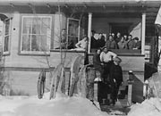
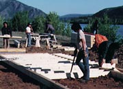
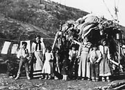
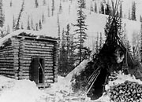
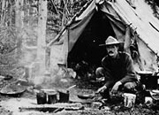
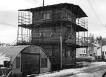
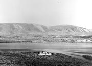

FOYER [fwaje]… par ext. Lieu servant d’abri, d’asile. 1. Lieu où vit, habite la famille (==> demeure, home, maison, toit) : la famille elle-même. Le foyer conjugal, paternel. ==> domicile.
«L’humanité entière comprend la joie du foyer, les affections de la famille» (Chateaub.)
«Un foyer ne doit pas être un lieu où l’on séjourne, mais un lieu où l’on revient» (Montherl.)
Extrait du Petit Robert
Anciennement, les Premières nations construisaient différents types d’abris. On se servait de divers types de structures selon le temps de l’année. Il y avait des bâtiments en appentis, des tentes circulaires avec une structure conique faite de perches, des constructions en forme de dôme couvertes de peaux de caribou ou d’orignal, des maisons de mousse, des maisons en rondins et des abris de fortune faits de broussailles et d’écorce.
Au début, les nouveaux arrivants dans le territoire avaient besoin d’abris temporaires, légers et faciles à transporter. Dawson, Whitehorse et Bennett étaient alors des villages de tentes. Lorsque les agglomérations ont été établies définitivement, et que le bois et d’autres matériaux de construction ont été accessibles, on a graduellement remplacé les tentes par des structures permanentes. À certains endroits, on a fait les constructions de bois par-dessus les tentes et laissé la toile en place. Ailleurs, on a construit de petites cabanes en rondins avec des appentis et des rallonges, qu’on ajoutait au besoin.
Les Premières nations ont adopté les nouvelles structures permanentes, bien que nombre d’entre elles font encore usage d’installations saisonnières. Dans les agglomérations, les nouveaux arrivants ont tenté de reproduire le style de vie qu’ils avaient laissé dans le Sud.
On ajoutait des bordures et d’autres détails à sa maison. Les entrepreneurs ajoutaient de fausses façades à leur entreprise afin de montrer qu’ils avaient du succès, qu’ils étaient stables. Aujourd’hui, on peut tout aussi bien trouver une cabane en rondins qu’un condominium au Yukon.
«Je l’ai construit moi-même en 1936. J’ai tiré les troncs d’arbres du ruisseau Contact sur 10 milles, par le lac. J’ai scié à bras les planches pour le plancher. Deux cent cinquante billots. J’ai couvert le toit d’un pied de mousse et de terre. Cache sur des billots de 12 pieds. Billots enveloppés de tuyaux de poêle. On a fait flotter les billots de la cabane en radeau, à 10 milles du site de prospection d’argent et de plomb. Les chiens les ont tirés le long de la grève.»
Anton Money décrivant la construction de sa cabane dans la région du lac Frances.
AY, collection Money, 84/83 no 12
Passer au tableau Le Yukon, chez nousOù on aime se retrouver
(Ci-dessus) Un groupe de résidents de Dawson et leur attelage (vers 1900).
AY, collection du musée de Dawson nº 6350
Un groupe de raquetteurs à l’entrée du 206, rue Hawkins (vers 1920). M. Newmarsh, directeur de la Banque de Commerce et propriétaire de la maison est sur la première marche. Jack Stewart, membre de la GRC, est derrière lui et le commis de banque, Kenny Fife, est le quatrième à partir de la gauche, au fond.
AY, collection Harbottle nº 6194
Randy Hager, Terry Simon, Norman Silas et un autre membre de la Première nation Selkirk reconstruisent la maison de Big Jonathan (1987).
Direction du patrimoine
Abri d’été avec structure, en bordure du fleuve Yukon (vers 1915).
AY, University of Alaska, collection des Archives nº 2965
Installations photographiées vers 1890 au camp Colonna, près de Rampart House, domicile temporaire de la United States Geological Survey.
Bancroft Library, Berkeley
Un prospecteur cuisine devant sa tente (sans date).
AY, collection Stringer, 82/332 nº 51
Un des fameux gratte-ciel en rondins de Whitehorse (vers 1956), à côté d’une hutte quonset.
AY, Canada : collection du ministère de la Défense, 91/37 nº 76603
La Police à cheval du Nord-Ouest a établi son premier poste au Yukon à Forty Mile.
AY, collection des Archives nationales du Canada 88/138 nº 12165